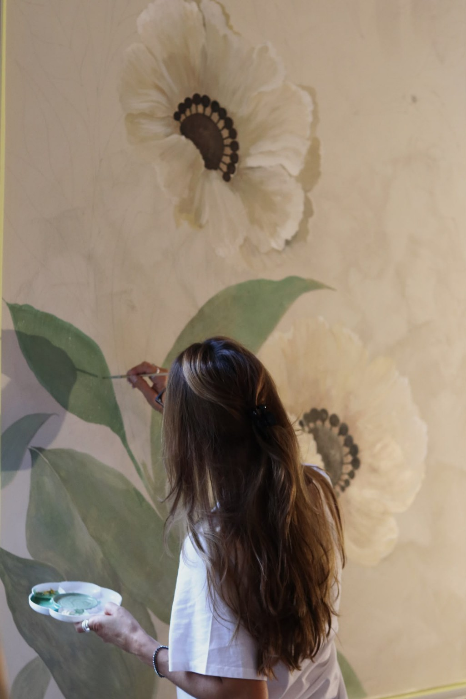

The process
From an idea
to your wall.
Send me a photo of the wall, its approximate measurements and any references you love. I’ll come back to you with questions, a creative direction and a tailored quote based on size, complexity and location.
No two walls are the same — and the price shouldn’t be either.
Start your project →